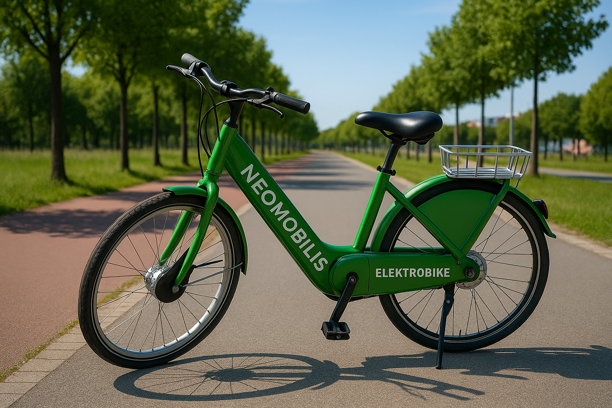

Étude des transports non polluants : création de la société NéoMobilis
Présentation globale
- Nom : NéoMobilis – Mobilité Régénérative
- Statut : Société Publique Locale (SPL)
- Création : 2026
- Propriétaire : Métropole Nice Côte d’Azur
- Siège social : Quartier Éco-Vallée, 06000 Nice
- Effectif : 420 employés
- Spécialisation : transport autonome, énergie verte et mobilité 100% écologique
NéoMobilis est la première société de transport « régénératif », c’est-à-dire capable non seulement de ne pas polluer, mais aussi de produire de l’énergie propre, d’améliorer la qualité de l’air et de réduire activement la pollution urbaine. Chaque déplacement contribue à un environnement plus sain.
Objectifs
- Faire de Nice la première ville européenne 100% mobilité propre
- Réduire de 90% les émissions liées aux transports d’ici 2035
- Réduire le trafic automobile de 30%
- Créer un modèle reproductible dans d’autres villes
Structure des services proposés
1) EcoShuttle Solaire (40 unités)
Minibus autonomes fonctionnant à l’électricité et à l’hydrogène vert. Ils disposent d’un toit photovoltaïque régénératif qui recharge les batteries pendant le trajet.

2) E-bike UltraCharge (2 000 vélos)

- Recharge automatique dans les stations solaires
- Batteries haute autonomie adaptées aux pentes niçoises
- Récupération d’énergie en descente
3) E-Pod – Capsules autonomes individuelles
- Trajets courts sur demande
- Silencieux, 100% électriques
- Disponibilité 24h/24
4) EcoCargo – Livraison écologique
Service de livraison urbaine en véhicules électriques et vélos-cargo, destiné aux commerçants, artisans et restaurateurs.
Modèle économique
Vision économique
Contrairement aux réseaux classiques souvent déficitaires, NéoMobilis repose sur un modèle économique durable : produire plus d’énergie qu’elle n’en consomme, diversifier les sources de revenus et générer une rentabilité dès la troisième année.
Sources de revenus
- Abonnements et titres de transport : 18 M€ / an
- Vente d’énergie solaire excédentaire : 6 M€ / an
- Partenariats et publicité : 2 M€ / an
- Données de mobilité anonymisées : 0,5 M€ / an
Total des revenus annuels : 26,5 M€
Dépenses annuelles
| Poste | Montant |
|---|---|
| Salaires (420 employés) | 15 M€ |
| Maintenance des véhicules | 3 M€ |
| Énergie (majoritairement solaire) | 0,8 M€ |
| Assurance et exploitation | 1,2 M€ |
| Renouvellement batteries | 2 M€ |
| Total des dépenses | 22 M€ |
Résultat net : +1,5 M€ / an (rentabilité dès la 3e année)
Plan d’investissement initial
Coût total de lancement : 95 M€
| Poste | Montant |
|---|---|
| Achat 40 EcoShuttle | 30 M€ |
| Achat 2 000 vélos UltraCharge | 3 M€ |
| Stations solaires intelligentes | 18 M€ |
| Flotte E-Pod autonome | 20 M€ |
| Développement IA + application | 5 M€ |
| Dépôts & maintenance | 12 M€ |
| Communication & lancement | 2 M€ |
Financement
- Métropole Nice Côte d’Azur : 30 M€
- Région Sud PACA : 10 M€
- Union Européenne (Fonds verts) : 25 M€
- Programme Horizon Europe : 12 M€
- Partenaires industriels : 15 M€
Impact écologique
- CO₂ évité : 55 000 tonnes / an
- Réduction du trafic automobile : –32%
- Production d’énergie renouvelable : 18 GWh / an
- Réinjection dans le réseau : 5 GWh / an
- Réduction pollution sonore : –70%
Technologie dépolluante
Chaque station de recharge NéoMobilis agit comme un « arbre artificiel » capable d’absorber les particules fines. Une station équivaut à 1 200 arbres en termes de purification de l’air.